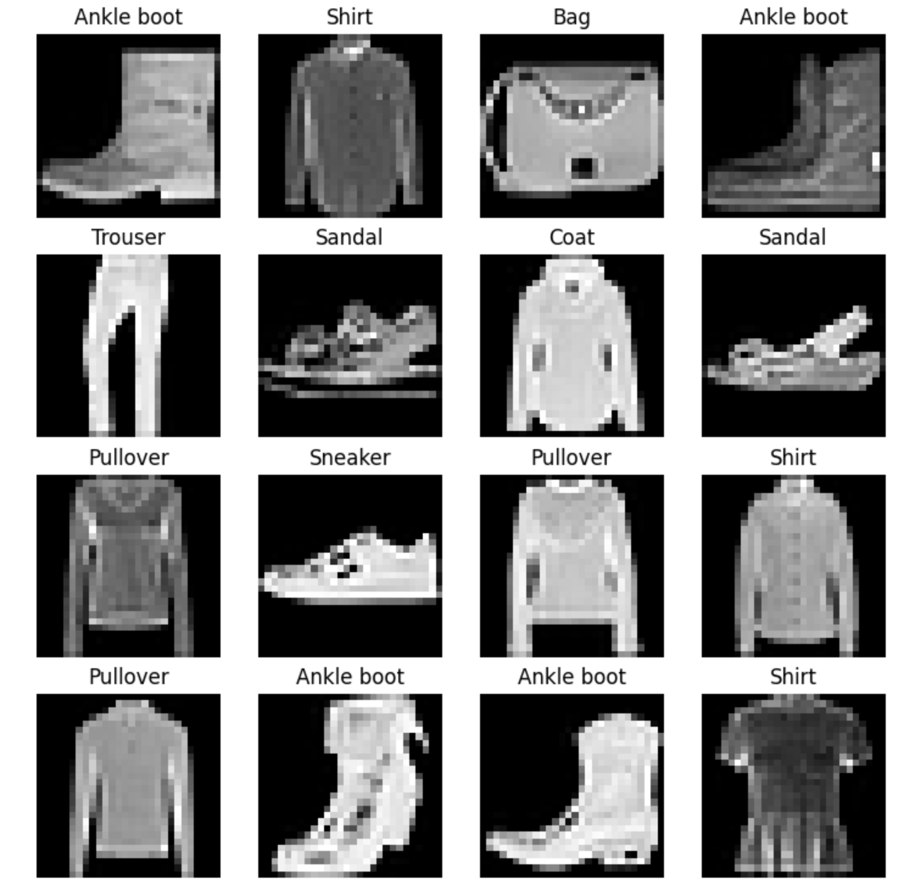

This project is a robust exploration of deep learning techniques applied to the field of computer vision, using the
FashionMNIST dataset. Leveraging PyTorch, it builds, trains, evaluates, and visualizes three distinct neural network
architectures, offering a comprehensive guide to modern image classification.
-
Introduction and Purpose: In the evolving domain of computer vision, classifying images accurately and efficiently
is a pivotal challenge. This project addresses this challenge by creating and comparing three deep learning models
to classify FashionMNIST images, serving as an exemplary application of neural networks to real-world tasks.

-
Getting Started and Requirements: With dependencies including PyTorch, torchvision, mlxtend, tqdm, pandas, and
matplotlib, the project is designed for ease of setup. Users can clone the repository and install the required
packages, even running the code on Google Colab without manual downloads.
-
Model Architectures and Design:
-
Model 0 - Simple Linear Neural Network: A foundational model using linear layers to demonstrate the
basic structure and functionality of a neural network.
-
Model 1 - Multilayer Feed-Forward Neural Network: An extension of the linear model, adding multiple
layers to enable the capture of more complex patterns and relationships.
-
Model 2 - Convolutional Neural Network with TinyVGG: Incorporating convolutional layers and the TinyVGG
architecture, this model enhances the capability to recognize spatial hierarchies and intricate features.
-
Training, Testing, and Evaluation Framework:
-
Training Steps: Each model undergoes training for specified epochs, with functions to manage the training
process.
-
Testing and Evaluation: Post-training, the models are evaluated on test data, with detailed metrics and
results encapsulated in a dictionary for further analysis.
-
Visualization and Analysis Tools:
-
Random Sample Predictions: Visualizing predictions for randomly selected samples, aiding in understanding
the model's behavior.
-
Confusion Matrix Plotting: Creating and plotting a confusion matrix, revealing the true vs. predicted
classifications.
-
Cross-Model Comparisons: A comparative analysis of the three models, offering insights into their strengths,
weaknesses, and suitability for different tasks.
-
Model Saving and Loading Instructions:
-
Saving Models: Guidelines to save trained models to files, preserving their state.
-
Loading and Re-Evaluating Models: Instructions to load saved models and evaluate them, ensuring consistency
and reproducibility.
-
Conclusion and Contributions: This project is more than a mere academic exercise; it embodies a practical and
instructive exploration of computer vision techniques using PyTorch. From simple linear networks to sophisticated
CNNs, it illuminates the path to understanding and applying deep learning to real-world challenges. The inclusion of
diverse visualization tools, performance metrics, and model management functionalities makes it a valuable resource
for anyone interested in the field of artificial intelligence.